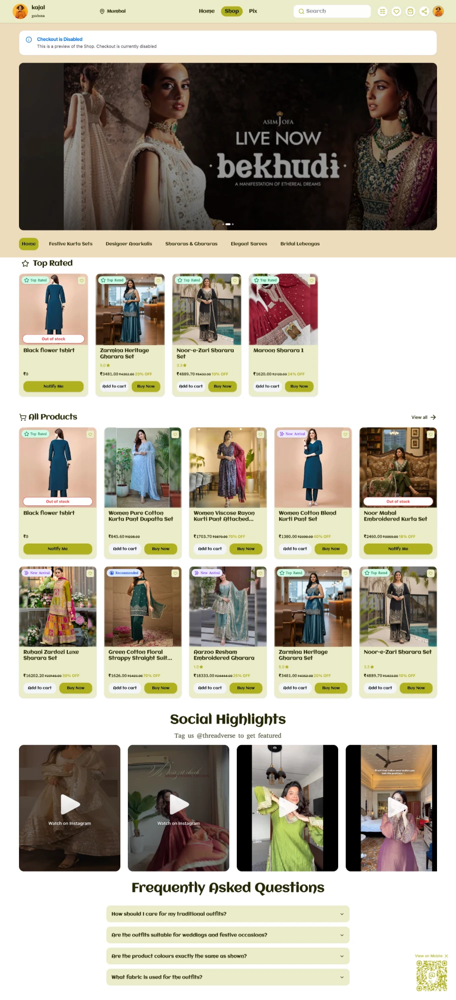
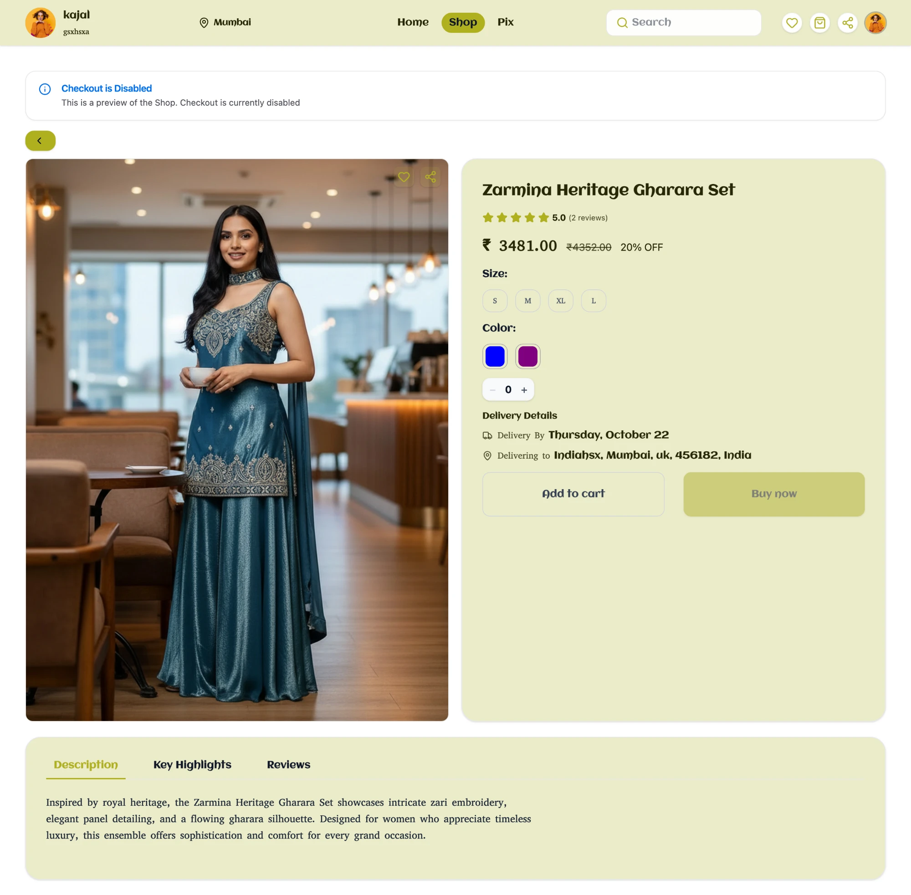

Getting online took sellers 2–3 days. We designed a store to get them selling in 5 minutes.
Scroll to flip ↻Small sellers sold through Instagram DMs and WhatsApp because building a website felt like expert work. I interviewed 40+ merchants, defined the problem and designed Shop’s storefront.
5 minutes was the design goal we set after the interviews, not a measured time.
Shop at a glance
- Research40+ interviews
- ProblemSetup is the barrier
- GoalSelling in ~5 minutes
- V1Structured storefront
- Pilot10 merchants
Why did we need to build Shop?
Sellers wanted to sell online, but a website felt like expert work.
Scroll to flip ↻Merchants sold on Instagram and WhatsApp: product posts and stories, PDF catalogues in chat, and order details sent message by message. When they wanted a proper online store, Shopify and Wix felt too complicated and slow to set up.
Before Shop: every order, by hand
Problem statementMerchants who want to sell online can’t get a store up without time, cost and technical effort that don’t fit where their business is.
How did I validate the problem?
40+ merchant interviews about how they sell today.
Scroll to flip ↻The first idea was a simple drag-and-drop storefront. Before building it, I interviewed 40+ merchants, mostly product sellers on Instagram. Instead of asking what features they wanted, I asked them to walk me through how they sold their last product, from first message to delivery.
How one order happens today
| Step | What the merchant does | Pain point |
|---|---|---|
| 1 | Posts products on Instagram, with prices in captions | Customers still DM for links and prices |
| 2 | Replies to every DM by hand | Hours a day, mixed with collab spam |
| 3 | Shares a PDF catalogue; the customer picks a code or sends a screenshot | No real browsing; every order is quoted by hand |
| 4 | Takes payment by UPI and checks the screenshot | Manual checks; trust issues on both sides |
| 5 | Arranges delivery and sends updates on WhatsApp | Tracked in Excel or a notebook |
| 6 | Tries to set up Shopify or Wix to grow | Themes, variants, payments and domains feel like expert work, so they stop or pay a developer |
Three insights
Of 39 product sellers, 15 had no website, 10 found setup too technical or slow and 8 named cost. A developer was estimated at ₹10,000–15,000.
Merchants wanted a store that looks like their own brand, because customers trust that more than a chat.
UPI screenshots, part-advance or cash on delivery, checked one by one.
Who we built for. Riya Mehta (fictional persona built from several real interviews) sells handmade candles and hampers on Instagram, takes orders in DMs, tried Shopify and gave up on themes, variants and payments.
Counter-signal. Made-to-order, wholesale and custom sellers need a conversation, not a fixed store, so we focused on ready-stock sellers.
Resulting goalMerchants didn’t lack a store builder; they lacked an easy one. So we set one goal: a merchant should be able to set up a store and start selling in about 5 minutes, with no developer.
What did we decide to build, and why?
A structured starting point, enough customisation, and fewer decisions.
Scroll to flip ↻Product visionGive merchants a structured starting point, enough customisation to make the store their own, and fewer decisions to worry about.
Core merchant journey
Riya’s path The yellow options are what a home seller like Riya picks.
MVP scope: built, deferred, out of scope
| Decision | Status | Why |
|---|---|---|
| Structured storefront with optional sections | Built | Merchants didn’t know what a website needs. Banner, category tabs, products, collections, Social Highlights and FAQs give a starting point; they keep only what they want. |
| Social Highlights | Built | A merchant shared customer posts in Instagram Stories as social proof. This puts them on her own store. |
| Limited customisation | Built | Too many choices overwhelm new merchants and slow setup. Merchants choose only a theme (classic, gradient or glass), one accent colour that becomes a full palette, a card style and fonts. |
| Ready-made templates by business type | Built | Pick one, swap in your own images and content. |
| Connect a payment account, or use a UPI ID | Built | A home seller like Riya rarely has a payment-gateway account, and she already takes payment by UPI. A UPI ID let her start without gateway setup. Trade-off: UPI payouts within 24 hours, handled by the team. |
| Use a delivery partner, or deliver yourself | Built | Riya makes candles at home and often sells locally, so she may not have a delivery partner. Self-delivery lets her sell in her own area without one; merchants who ship further can choose a partner. |
| Platform-written order emails | Built | Nothing extra to set up; customers still get status updates. |
| Coupons, campaigns, abandoned-cart reminders | Deferred | They grow sales, which only matters after a first sale. |
| Custom email templates | Deferred | Only if merchants ask for it. |
| Made-to-order and wholesale flows | Out of scope | They need a conversation, not a fixed store. |
Every decision was checked against one question: can a merchant complete one real order without leaving the platform?
How did I take the product forward?
From PRD and flows to a live storefront.
Scroll to flip ↻I wrote the PRD and mapped the merchant and customer flows, from sign-up to a delivered order. I decided the storefront structure and built the base template and its business-type versions; the designer turned them into high-fidelity UI. With engineering, I turned the payment provider’s documentation into requirements and worked on CSV product import. I also defined analytics requirements and set up event tracking, so the team could see what merchants did, not only what they said. The pilot merchants were existing SocialAddress clients, and we spoke with them to gather feedback.
What the customer experiences
Designing for Riya, not for big brands. Most store builders assume a merchant already has a payment gateway and a courier partner. Riya has neither: she takes UPI and often delivers locally herself. So I made both optional: connect a payment account or just add a UPI ID, and choose a delivery partner or deliver yourself. That removed two setup steps that would have stopped home sellers from going live, at the cost of the team handling UPI payouts by hand during the pilot.
The storefront customers see


Screens from a preview store, so checkout is disabled.
What happened, and what did I learn?
Live with 10 pilot merchants, and what I'd measure next.
Scroll to flip ↻Shop launched with 10 pilot merchants, existing SocialAddress clients. Their main feedback: they could set up and run the store themselves. We then connected the SAM AI agent to draft product descriptions, and explored SEO and GEO so products could appear in search (an early, partial implementation).
What someone asks for isn’t always the real problem. We were asked for a shop; merchants needed selling to stop being so much work.
Measure stores published, time to first product and first order, and time the 5-minute goal with real merchants.
My internship ended before longer-term results were tracked, so this page shows no usage, order or revenue numbers.
Up nextHow I cut the admin around every booking